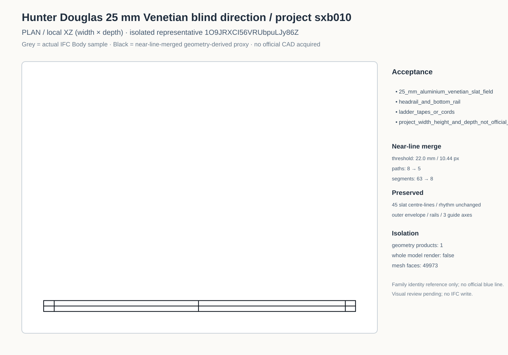
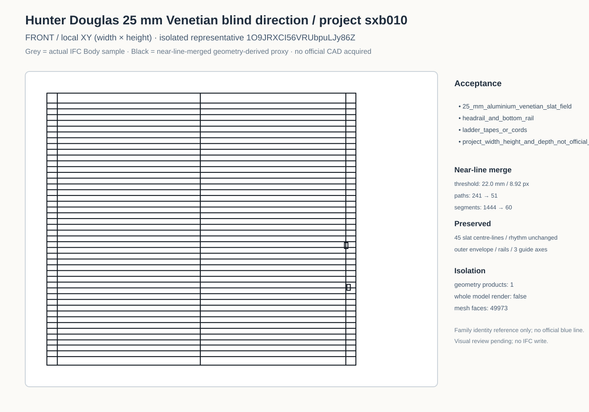
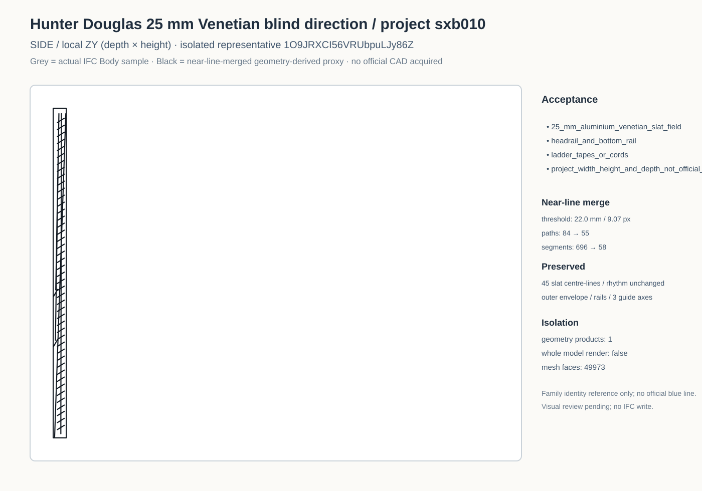
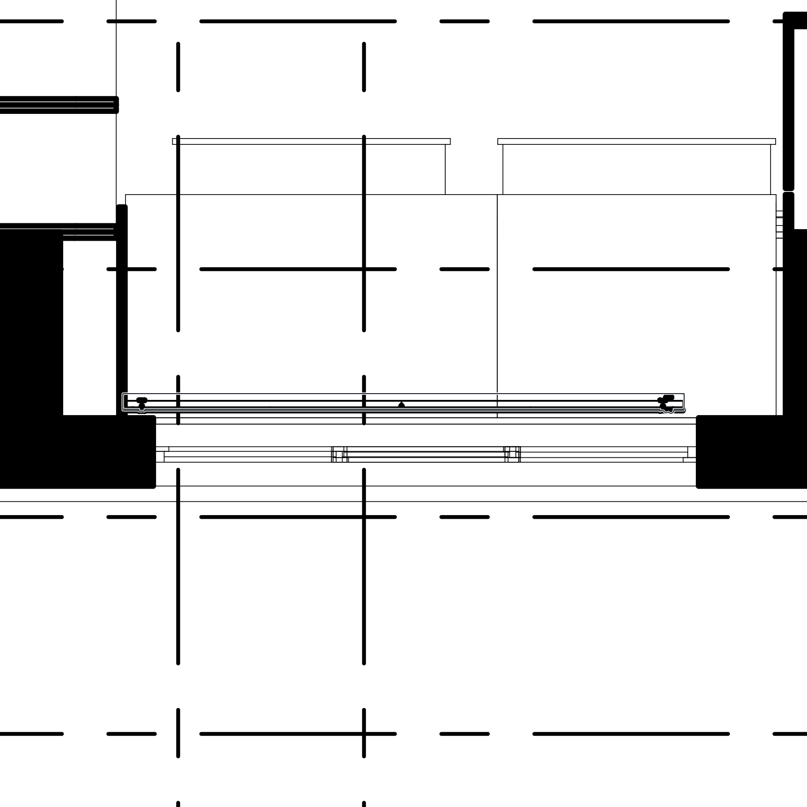
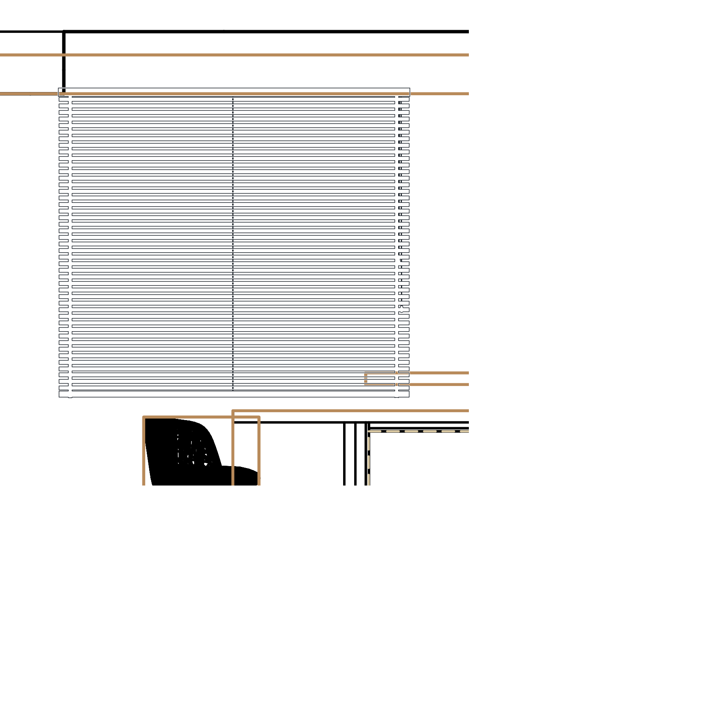
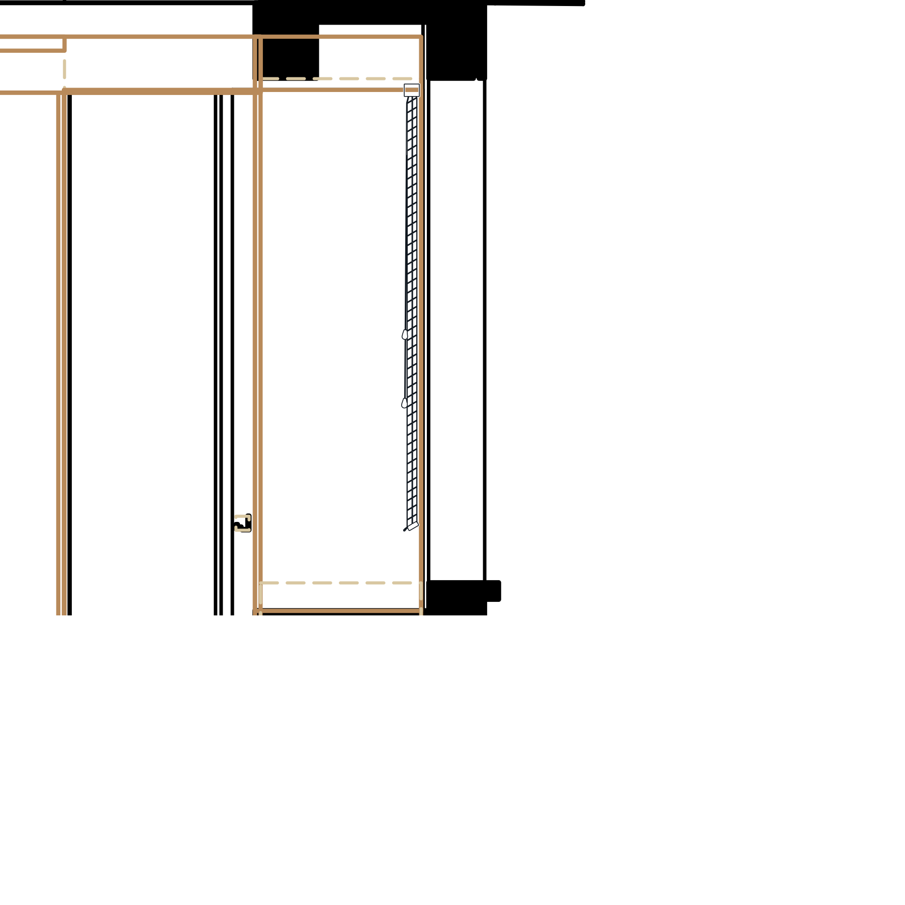
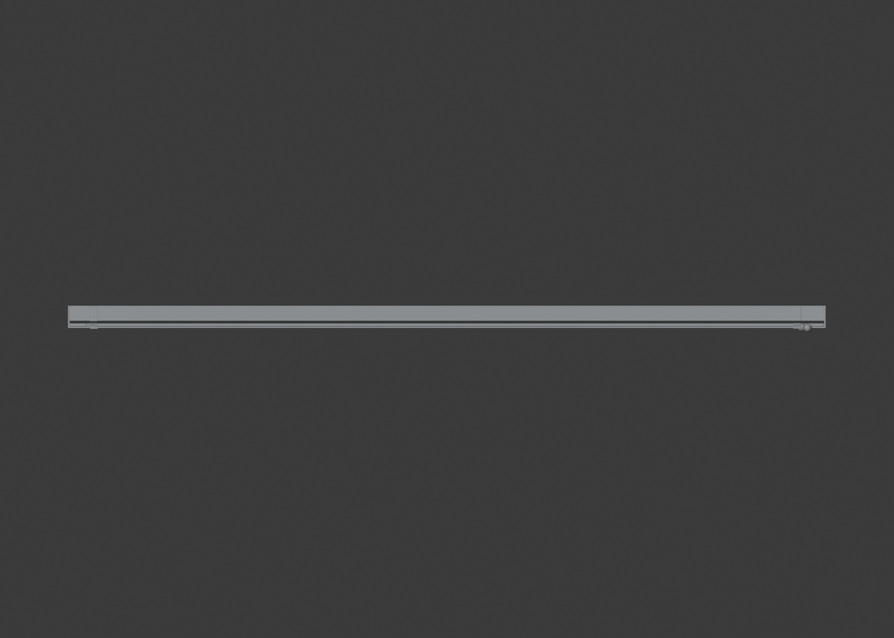
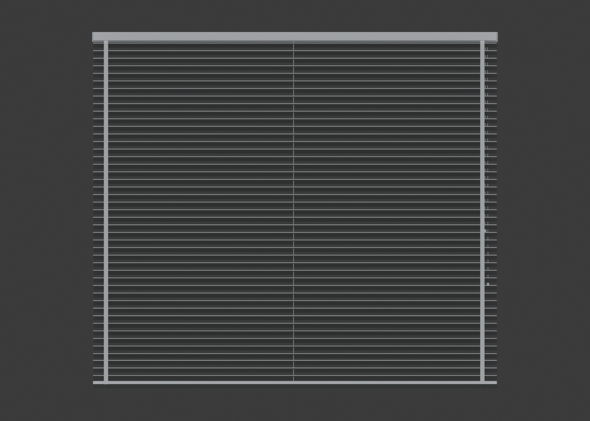
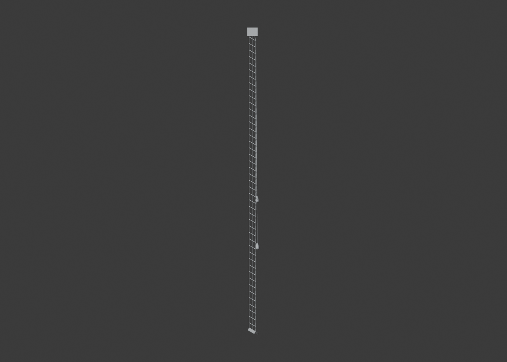
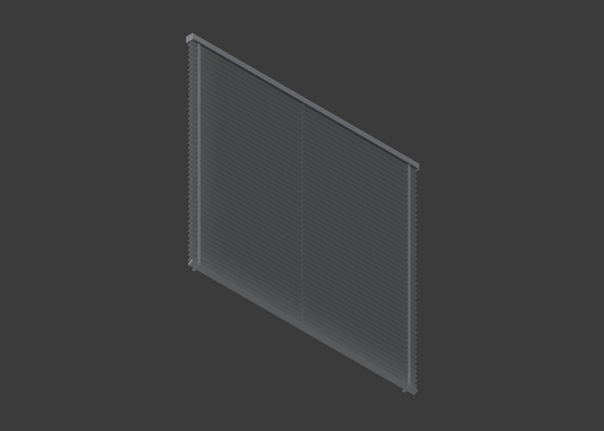

Plan

Black line = simplified drawing representation derived from the original high-poly geometry. Owner evidence confirms the Hunter Douglas 25 mm family and matte graphite/grey-black direction only. Exact SKU, control type, finish code and shop dimensions remain pending. The verified official download catalogue returns PDF only, so no blue line is shown.






semantic Plan / local XZ

semantic Front / local XY

semantic Side / local ZY

isometric

7a50b87e8f48a7c2bfbaa9f1dabdfca7155fa684b2325c66aa1ae15c8ab0a25c